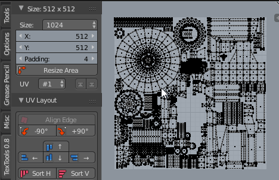
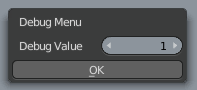

TexTools for |
TexTools for 3dsMax |
TexTools is a free addon for Blender with a collection of UV and Texture related tools. Back in 2009 I released the Original TexTools for 3dsMax. Currently this is an early development release and more features will be added in the future.
Download
Installation
- Open User Preferences

- Go to the Add-ons tab

- Press Install Addon and Select the zip file.

- Enable the TexTools Addon

- TexTools now is in the UV/Image Editor
 in the left Tool Panel.
in the left Tool Panel.
Requirements
Blender 2.79
Links
Git Source
PayPal Donatio3dsMax VersionBlenderartist Thread
Personal Links
| renderhjs.net | YouTube |
Size Panel
Size
Used to set the texture size for baking but also the padding size for UV operations when spacing UV islands. Use the dropdown menu to quickly assign common square texture sizes. All units are in pixels.
Padding
Padding size in pixels. The padding is used for UV margins and texture baking.
 Resize
Resize
Opens a resize popup where you can extend or resize the UV layout canvas to either direction.

UV Channel
Cycle through existing UV channel via this dropdown menu. If no UV map exists a button to create one will appear instead.
The up and down arrow allow you to swap UV channels up or down.

 Checker Map
Checker Map
Assigns a checker map to the selected object or cycles through 2 checker maps. When a checker map is assigned it changes the view to texture mode.
 Reload Textures
Reload Textures
Reload all textures in the current blend file and removes unsued ones.
UV Layout Panel
 Align
Align
In UV vertex mode  Vert mode it Aligns selected UV verts to either side of the initial selection bounds. In the UV face mode
Vert mode it Aligns selected UV verts to either side of the initial selection bounds. In the UV face mode  selected UV islands are aligned to either side of the initial selection bounds.
selected UV islands are aligned to either side of the initial selection bounds.
 Align Edge
Align Edge
Aligns the UV island of the selected UV edge Edge mode to the closest 90 degree angle. Rotate 90°
Rotate 90°
Rotates the UV island 90 degrees left or right and aligns the island to the initial bounding box's top left or right.
 Sort & Align
Sort & Align
Sorts the selected UV islands by longest side and aligns them vertically or horizontally in a row.
 Iron Faces
Iron Faces
Unwraps selected viewport faces Face  mode into a single UV island. This is often a quicker approach of unwrapping as opposed to marking the boundary edges (mark seams).
mode into a single UV island. This is often a quicker approach of unwrapping as opposed to marking the boundary edges (mark seams).
Selection Tools
 Select Similar
Select Similar
Selects similar UV islands based on the UV island input selection and matching UV Island topology.
 Select Overlap
Select Overlap
Collects all UV islands that overlap each other and select of each group all UV faces except for one island. Select Island Bounds
Select Island Bounds
Selects the edge bounds  of all UV Islands in the 3D viewport.
of all UV Islands in the 3D viewport.
Texel Density Tools
 Texel Density
Texel Density
Texel density is a value that describes how many pixels from a texture are visible per 1 unit or 1 meter. This value can be sampled from UV face selections, or from selected Objects.

 Get Density
Get Density
Calculates the Texel density of the selected objects or UV faces when in UV editor mode.
 Apply Density
Apply Density
Applies the Texel Density to the selected Objects or UV faces by scaling the UV's. Select from the dropdown menu from 2 modes of scaling the UV's:
- Scale by UV Islands
- Scale by Object UVs
Texture Baking Panel
To bake textures in TexTools just select your objects and press Bake. High and low poly object pairs are detected via object names.
 Bake
Bake
Bakes the current texture type with the current selected object set.
 AA / Anti Alias
AA / Anti Alias
Anti Aliasing level, choose from: None, 2x and 4x. When you enable Anti Aliasing the bake render is rendered at a scaled resulution and afterwards down scaled. Anti Aliasing works on any baking mode.

Single
With multiple objects selected enable this when you want all items to be baked into a single texture as opposed to multiple. It uses the name or ID from the first item in the bake set list. This is great for multi part objects or exploded bake setups.

Bake Objects
Bake Sets
...
Type of baking objects
TexTools automatically groups your scene selection into sets to bake. Objects with common name prefixes are grouped into a set. Objects can be of 3 different object types:

Low poly objects: when their name used the keyword: 'lowpoly', 'low', 'lp' or 'l'

High poly objects: when they contain a Subdevision Surface modifier or when their name used the keyword: 'highpoly','high','hp' or 'h'

Cage objects:when their name used the keyword 'cage' or 'c' . Cages are used to project rays from a custom mesh, this match needs to match the face and vertex count of the low poly object.
Lock Selection
Lock or unlock the current bake selection. When locked scene selection changes won't affect the baking list. This is great for tweaking meshes, cages or other settings while baking.

Select by type
Select from the baking sets all objects that match a critera such as 'Warning', 'Low', 'High' or 'Cage' objects.

Tip: When bake sets are locked you can select scene objects here independently of the bake sets.
Organize
Declutters your selected object names by matching high and low poly objects by their bounding box location and size. Only high poly objects are renamed to match the low poly names with the ' high' suffix.

 Explode
Explode
Moves all selected bake pairs apart into 6 directions. Offsets are based on bounding boxes and offset to the center of the whole group. Margins are a 35% of the average side of all bounding boxes. Animation keyframes are added at 0 and 50 of each selected object to transition between the 2 states. Keyframes can be removed aftwards if not desired.

Bake Types
Normal Tangent

A normal map with a local Tangent space. Parameters: Ray Distance
ID Map

Assigns a unique color to each mesh element. This map is often used to quickly select elements in Texture editing Applications such as Photoshop or Substance Painter.
AO / Ambient Occlusion

A plain ambient Occlusion bake in Cycles.
Parameters: Samples
Cavity

Assigns dirty vertex colors (convexity) to the source mesh and combines it with a 'pointiness' cycles render node.
Dust

Dust is similar to the cavity map but adds additional Z top normals to the mix. Use this mask for dust and dirt masks in your texturing process.
Gradient Z

A linear gradient from top to bottom of the object in world space.
Developer Notes
Using GIT source version in Blender
dsad sad sa asd sda dasd as das daadsasd adsa adsdsasa ds dsadasd sa
- Goto user preferences (Ctrl + Alt + U)
- In the 'File' tab set the 'Scripts' path to '{GIT Path}\' so that blender will pick up 'addons' folder
- In the 'Add-ons' tab enable TexTools
Enable debug features
- Press Ctrl + Alt + D for the debug value panel
- Set the value other than '0'
- Protoype tools should be shown in red in the interface

Code Structure
...
Release Log
Having issues with the latest version? Try a older version which you can find here:
TexTools 0.8.0.zip TexTools 0.7.2.zip TexTools 0.7.1.zip TexTools 0.7.0.zip TexTools 0.6.0.zip TexTools 0.3.0.zip2018 render|hjs